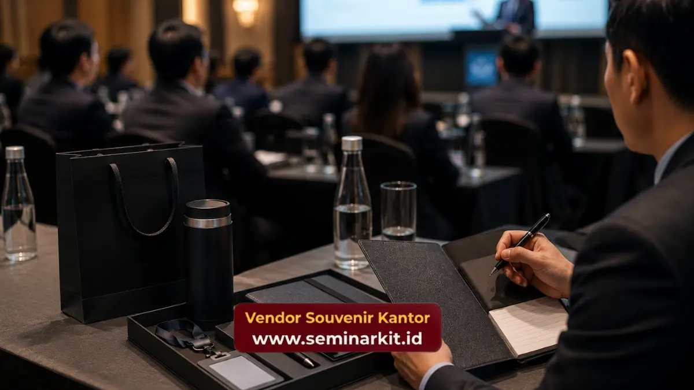

Seminar kit eksklusif paling relevan digunakan pada acara formal seperti pelatihan internal, workshop, konferensi, dan rapat kerja tahunan yang melibatkan interaksi langsung dengan peserta dalam durasi tertentu.
Penggunaan yang tepat memastikan setiap item dalam paket benar-benar berfungsi optimal, bukan sekadar pelengkap seremonial.
Memahami momen yang tepat membantu perusahaan mengalokasikan anggaran secara lebih efisien.
- Pelatihan dan workshop internal menjadi momen paling umum penggunaan seminar kit eksklusif.
- Konferensi dan rapat kerja tahunan membutuhkan kombinasi item yang lebih lengkap dibanding acara singkat.
- Onboarding karyawan baru juga dapat memanfaatkan seminar kit sebagai bagian dari kesan pertama perusahaan.
- Durasi dan skala acara menjadi acuan utama dalam menentukan kombinasi item yang relevan.
- Pemesanan seminar kit sesuai jenis acara dapat dikonsultasikan melalui vendorsouvenirkantor.web.id.
Kapan Seminar Kit Eksklusif Paling Relevan Digunakan dalam Agenda Perusahaan?
Seminar kit eksklusif paling relevan digunakan ketika acara melibatkan interaksi langsung antara peserta dan materi dalam durasi tertentu, seperti pelatihan, workshop, dan konferensi formal.
Momen seperti pelatihan peningkatan kompetensi karyawan atau workshop pengembangan produk umumnya membutuhkan media pencatatan dan perlengkapan pendukung yang memadai.
Dalam konteks ini, seminar kit eksklusif berperan sebagai perlengkapan fungsional yang langsung digunakan peserta sepanjang acara berlangsung.
Selain pelatihan internal, seminar kit juga relevan digunakan pada acara yang melibatkan pihak eksternal seperti mitra bisnis atau klien, di mana kesan profesional menjadi prioritas utama.
Pada momen seperti ini, kualitas dan tampilan seminar kit turut memengaruhi persepsi eksternal terhadap kredibilitas perusahaan.
Bagaimana Seminar Kit Eksklusif Mendukung Acara Pelatihan dan Workshop Internal?
Seminar kit eksklusif mendukung acara pelatihan dan workshop internal dengan menyediakan perlengkapan dasar seperti notebook dan alat tulis yang langsung digunakan peserta untuk mencatat materi selama sesi berlangsung.
Pada pelatihan internal, peserta umumnya membutuhkan media pencatatan yang praktis dan nyaman digunakan dalam waktu lama.
Notebook dengan kualitas kertas baik dan pulpen yang nyaman digenggam membantu peserta tetap fokus mengikuti materi tanpa terganggu oleh perlengkapan yang kurang memadai.
Workshop dengan format lebih teknis, seperti pelatihan penggunaan sistem atau sertifikasi kompetensi, juga dapat memanfaatkan tas seminar sebagai wadah modul, sertifikat, dan dokumen pendukung lainnya, sehingga peserta lebih mudah membawa pulang seluruh materi acara secara rapi.
Apakah Seminar Kit Eksklusif Cocok untuk Konferensi dan Rapat Kerja Tahunan?
Seminar kit eksklusif cocok digunakan untuk konferensi dan rapat kerja tahunan karena acara jenis ini umumnya melibatkan durasi lebih panjang dan peserta dalam jumlah besar yang membutuhkan kelengkapan lebih menyeluruh.
Pada konferensi multi-hari, kombinasi item yang lebih lengkap seperti tas, notebook, tumbler, dan ID card holder membantu peserta menjalani rangkaian acara dengan lebih nyaman.
Tumbler misalnya, membantu menjaga kenyamanan peserta tanpa harus bergantung pada kemasan minuman sekali pakai selama acara berlangsung.

Rapat kerja tahunan yang melibatkan jajaran manajemen dan perwakilan divisi juga sering menggunakan seminar kit dengan kualitas lebih premium sebagai bentuk apresiasi sekaligus penguatan identitas korporat.
Mengingat peserta pada momen ini umumnya berasal dari kalangan internal dengan posisi strategis di perusahaan.
Bagaimana Menyesuaikan Jumlah Seminar Kit dengan Skala Acara?
Jumlah seminar kit sebaiknya disesuaikan dengan skala acara, mulai dari jumlah peserta yang terkonfirmasi hingga potensi peserta tambahan yang biasanya muncul mendekati hari pelaksanaan acara.
Untuk acara berskala kecil hingga menengah, seperti pelatihan internal dengan puluhan peserta, penghitungan jumlah seminar kit relatif lebih mudah karena data peserta biasanya sudah final jauh sebelum hari acara. Perusahaan dapat memesan sesuai jumlah pasti tanpa perlu cadangan yang terlalu banyak.
Sementara itu, acara berskala besar seperti konferensi atau rapat kerja tahunan dengan ratusan peserta umumnya membutuhkan perhitungan cadangan sekitar lima hingga sepuluh persen dari total peserta terkonfirmasi.
Cadangan ini mengantisipasi kemungkinan peserta tambahan, panitia, maupun narasumber yang turut membutuhkan seminar kit selama acara berlangsung.
Skala acara juga memengaruhi kompleksitas kombinasi item yang dipilih.
Acara besar dengan banyak sesi paralel biasanya membutuhkan kelengkapan tambahan seperti ID card holder untuk memudahkan identifikasi peserta antar ruangan.
Sementara acara berskala kecil dengan format tunggal cukup menggunakan kombinasi item dasar tanpa perlu kelengkapan tambahan yang kompleks.
Perencanaan jumlah dan kombinasi item sejak awal membantu memastikan seluruh peserta menerima paket yang layak tanpa kekurangan maupun kelebihan stok yang tidak perlu.
Memahami momen yang tepat untuk menggunakan seminar kit eksklusif membantu perusahaan mengoptimalkan anggaran sekaligus memperkuat kesan profesional di setiap jenis acara.
Sesuaikan kebutuhan seminar kit untuk agenda perusahaan Anda dan pesan sekarang melalui vendorsouvenirkantor.web.id.

Banner promosi: klik gambar untuk langsung terhubung ke WhatsApp tim sales.